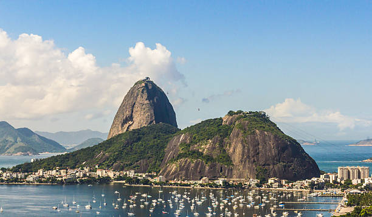

Home
Corcovado
Floresta da Tijuca
Praias
Pão de Açúcar
 Monumento Natural dos Morros do Pão de Açúcar e da Urca é um complexo de morros localizado no bairro da Urca, na cidade do Rio de Janeiro, no Brasil. É composto pelo Morro do Pão de Açúcar (que dá nome ao complexo) e pelo Morro da Urca. Junto com a estátua do Cristo Redentor, é o maior cartão-postal da cidade do Rio de Janeiro e um dos mais famosos do Brasil. Pelas características únicas, margeado pelas águas da baía de Guanabara, constitui-se em uma referência turística internacional para a cidade.
Monumento Natural dos Morros do Pão de Açúcar e da Urca é um complexo de morros localizado no bairro da Urca, na cidade do Rio de Janeiro, no Brasil. É composto pelo Morro do Pão de Açúcar (que dá nome ao complexo) e pelo Morro da Urca. Junto com a estátua do Cristo Redentor, é o maior cartão-postal da cidade do Rio de Janeiro e um dos mais famosos do Brasil. Pelas características únicas, margeado pelas águas da baía de Guanabara, constitui-se em uma referência turística internacional para a cidade.

Possui, como atração complementar, o passeio de teleférico, interligando a Praia Vermelha, o Morro da Urca e o Morro do Pão de Açúcar. Conhecido como Bondinho do Pão de Açúcar, o teleférico foi idealizado em 1908 e inaugurado em 1912, tornando-se o primeiro teleférico instalado no país e o terceiro do mundo. Nesses mais de cem anos de existência, já transportou mais de quarenta milhões de pessoas. Na última estação do bondinho, tem-se a vista panorâmica das cidades do Rio de Janeiro e de Niterói.